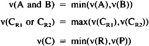

by Abraham Kandel
CRC Press, CRC Press LLC
ISBN: 084934297x Pub Date: 11/01/91
|
|
Fuzzy Expert Systems
by Abraham Kandel CRC Press, CRC Press LLC ISBN: 084934297x Pub Date: 11/01/91 |
| Previous | Table of Contents | Next |
R. López de Mántaras
J. Agusti
E. Plaza
C. Sierra
This paper describes MILORD, an expert systems building tool containing a knowledge elicitation module and two inference engines (forward and backward) with uncertain reasoning capabilities based on fuzzy logic. MILORD allows the user to express the degree of certainty by means of expert-defined linguistic statements and provides the possibility to choose among three different calculi of uncertainty corresponding to three different models of the and, or and implication connectives.
The switching between the two engines is transparent to the user. MILORD has two types of control strategies: one consists of a lookahead technique that allows the user to detect, in advance, whether or not the linguistic certainty value of a conclusion will reach a minimal threshold acceptance value. The other concerns the selection of rules according to several criteria. MILORD also contains a limited, but useful, explanation module as well as a rule editor, not described in this chapter.
The knowledge base consists of facts and rules. The facts are LISP atoms associated with a linguistic certainty value. A nonevaluated fact will have the value nil and, therefore, is very fast to check if a given fact is known, i.e., if a certainty value has been assigned to it.
Every rule has a set of conditions which, when evaluated with a certain degree of linguistic certainty, leads to a conclusion whose degree of linguistic certainty depends on the degrees of the conditions. The rules are externally represented as follows:
(Rule rule — number (If conditions) [vc] (Then conclusions))
where [vc] is the linguistic certainty value of the rule.
In order to enable a fast access to the rules, MILORD translates the preceding list into the following internal representation that uses the LISP property lists:
Rule-N → VAL[vc] IF (p1, . . . , pN) THEN (c1, . . . , cM)
where VAL, IF, and THEN are properties of the atom rule. The access to the conditions and conclusions of a rule is then an access to the properties of an atom.
The internal representation of the rules builds, for each conclusion, a property list which is the list of rules that deduce this conclusion, together with the linguistic certainty value of each rule, i.e.,
Conclusion → Rules ((rule1 vc1)...(rulek vck))
where the rules in this list are listed in decreasing order of their linguistic certainty values. This ordering will be used by the lookahead control strategy that will be described later.
The forward reasoning starts with a set of given facts and its goal is to deduce a hypothesis whose linguistic certainty value reaches a given acceptance threshold. If the forward reasoning gets to a hypothesis whose certainty value is below the threshold, the backward reasoning is called in order to try to increase this certainty value by considering, through a lookahead process, other rule-paths that would conclude the same hypothesis with a higher certainty.
MILORD applies a prospection process from the hypothesis toward the external (non-deducible) facts in such a way that at any time it checks if the certainty value of the hypothesis can reach the acceptance threshold value. If not, it will consider a new hypothesis. Let us now briefly describe such a process with the following default operators, and for the and, or and → connectives, to perform the calculus of uncertainty (although the lookahead process is independent of the operators used):

where A and B are conditions of a same premise, CR1 and CR2 represent the same conclusion deduced by the two rules R1 and R2, and C is the conclusion of rule R whose premise is P.
The preceding operators are used, respectively, in the evaluation of the satisfaction of the premise, in the combination of several rules with the same conclusion, and in the propagation of the uncertainty from the premise to the conclusion of a rule.
| Previous | Table of Contents | Next |